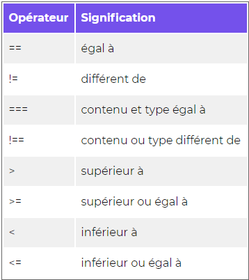

Résumé
IntroductionLe code
Les variables
Les constantes
Les objets
Les tableaux ou array
Les conditions
Les boucles
Les fonctions
Les évenements
Le JavaScript est un langage de programmation interprété, c'est-à-dire qu'il a besoin d'un interpréteur
pour pouvoir être exécuté.
Le JavaScript est utilisé majoritairement au sein des pages Web mais son utilisation en guise de serveur
ou d'application commence à se répandre.
Tout comme le HTML, le JavaScript est généralement exécuté par le navigateur de l'internaute : on parle
d'un comportement client-side, par opposition au server-side lorsque le code est exécuté par le
serveur.
Le JavaScript est standardisé par l'ECMA International sous le nom d'ECMAScript qui constitue la
référence du langage.
La dernière version standardisée du JavaScript est basée sur l'ECMAScript 5, sorti en 2009. Mais sa
nouvelle version, ECMAScript 6, prend du terrain.
Un code JavaScript bien présenté est plus lisible et plus facilement modifiable.
Les instructions doivent êtres séparées par un point-virgule.
Il est possible d'inclure des commentaires au moyen des caractères //, /* et */.
Les codes JavaScript se placent dans une balise "<. script>".
Il est possible d'inclure un fichier JavaScript grâce à l'attribut "src" de la balise <.script>.
Une variable est un moyen pour stocker une valeur.
On utilise les mots clés var ou let pour déclarer une variable, et on utilise=pour affecter une valeur à la variable.
Les variables sont typées dynamiquement, ce qui veut dire que l'on n'a pas besoin de spécifier le type de contenu que la variable va contenir.
Grâce à différents opérateurs, on peut faire des opérations entre les variables. ( "+", "-", "*", "/", "%") voir ici
L'opérateur "+"" permet de concaténer des chaînes de caractères, c'est-à-dire de les mettre bout à bout.
La fonction "prompt()" permet d'interagir avec l'utilisateur.
Une variable est definie par: son nom, sa valeur et son type.
Une constante est une genre de variable mais contrairement à cette derniere, sa valeur de change jamais à partir du moment ou elle est initialisée.
Pour une donnée fixe, on utilise donc une constante.
Les objets peuvent contenir autant d'information que l'on souhaite, de type différents dans une seule variable. Un objet est donc de type complexe car il contient plusieurs valeur qui peuvent etre de n'importe quel type.
Pour savoir à quoi correspondent les valeurs à l'intérieur d'un objet, on les associes à des clefs. La clef est une chaine de caractère qui explique la valeur correspondante; nom , mail age, etc L'objet finale sera donc une série de "paire" correspondantes
Pour facilité la création d'objet nous dispons d'un outil qui s'appelle "les classes". Ce sont des plans qui permettent
Les tableaux ou Array permet de créer une liste de valeur ou d'objet. c'est une liste ordonnée. donc chaque élément a un index. Dans cet matrice on compte à partir de 0.
var monTableau2 = new Array();
monTableau[0] = "Pomme"; // affectation à la 1ère case en position 0
monTableau[1] = "Poire";
console.table(monTableau);
console.log(monTableau[0]); // affiche Pomme
console.log(monTableau[1]); // affiche Poire
var legumes = ["Carotte", "Haricot", "Poivron"];
var legumes2 = new Array("Carotte", "Haricot", "Poivron");
console.log(legumes[2]);
legumes[2] = "Epinard";
console.log(legumes[2]);
console.log(legumes.length);
legumes.push("Courgette"); // ajoute 1 case contenant courgette
legumes.push("Aubergine", "Tomate", "Potiron");
La méthode pop() va nous permettre de retirer le dernier élément d'un tableau
legumes.pop(); // retire le Potiron
tableau.shift();
legumes.shift(); // retire la Carotte
// tableau.splice(positionDemarrage, nbASupprimer)
legumes.splice(1, 2); // supprime Epinard et Courgette
let concombre = "Concombre";
legumes.splice(1, 0, concombre);
var personne = {
nom: "Wayne",
prenom: "Bruce",
age: 35
};
console.log(personne.prenom);
console.log(personne["nom"]);
var tabLegumes = ["Carotte", "Poivron", "Navet"];
var tabFruits = new Array("Banane", "Pomme", "Kiwi");
A partir de ces deux tableaux nous allons créer un tableau à 2 dimensions
var primeur = new Array(tabLegumes, tabFruits);
console.table(primeur);
// Afficher le legume Poivron
console.log(primeur[0][1]);
//Afficher le fruit Kiwi
console.log(primeur[1][2]);
var zoo = [
{
pseudo: "Covid",
espece: "Pangolin",
continent: "Afrique"
},
{
pseudo: "Simba",
espece: "Lion",
continent: "Afrique"
}
];
Afficher dans la console le pseudo des deux animaux;
console.log("Nos amis " + zoo[0].pseudo + " et " + zoo[1]["pseudo"]);
Une condition retourne une valeur booléenne :"true" ou "false".
De nombreux opérateurs existent afin de tester des conditions et ils peuvent être combinés entre eux.
La condition "if else" est la plus utilisée et permet de combiner les conditions.
Quand il s'agit de tester une égalité entre une multitude de valeur, la condition "switch" est préférable.
Les ternaires sont un moyen concis d'écrire des conditions "if else", et ont l'avantage de retourner une valeur.

Exemple
1 == 1 --> vrai
"1" == 1 --> vrai
1 != 2 --> vrai
1 != "1" --> faux
3 === 3 --> vrai
3 !== "3" --> vrai
3 !== 3 --> faux
4 !== 3 --> vrai
3 === "3" --> faux

if (myBoolean) {
// réaction à la valeur vraie de
myBoolean
} else {
// réaction à la valeur faux de myBoolean
}
var i = 1;
while (i <=10){
console.log("Instructions de la boucle while éxécutées " + i + "
fois");
// Attention à bien incrémenter la valeur de
i
i++;
}
do {
console.log("Instructions de la boucle do...while éxécutées " + i + "
fois");
// Attention à bien incrémenter la valeur de
i
i++;
} while (i <= 10);
for (var j = 1; j <= 10; j++) {
console.log("Instructions de la boucle for éxécutées " + j + "
fois");
}
Pratique pour parcourir les clés d'un tableau associatif
var contact = {
nom: "Norris",
prenom: "Chuck",
telephone: "0123456789",
email: "cnorris@wanadoo.fr"
};
for (var key in contact) {
// console.log(contact.key) pas possible car
sinon il va chercher une clé qui s'appelle key
console.log(key + " : " + contact[key]);
}
Une fonction est un bloc de code qui effectue une tâche précise.
Quand on a besoin d'excuter le code qui s'y trouve on appelle la fonction. Celle ci a un nom
La plupart des fonctions ont besoin de donnée pour etre effectuée.
quand on déclare une fonction, on liste les données qu'elle a besoin. cela s'appelle les paramètres d'une fonction.
function nomDeLaFonction(paramètre 1, parametre 2){
code
}
Dans certaines situation, la fonction retourne une valeur, c'est ce qu'on appelle une valeur de retour.
function somme(nombre1, nombre2){
return nombre1 + nombre2;
}
somme(3,4); ici, les chiffres sont
appelés des arguments
Une méthode est une function associé à un objet. Autrement dit c'est une function privé, dont le champ d'action est réduit à un objet
voici une liste de fonctions et méthodes dites "natives" c'est à dire qui sont déjà pgrmé de base dans le JS.
liste de fonctionsLe vrai dynamisme d'une page web est de pouvoir interéagir a chaque action de l'utilisateur en lui envoyant le contenu demandé.
Cela passe par les évenements
En Js, les évenements sont représenté par un nom et par une fonction appellée callback
Cette derniere sera appellée a chaque fois que l'action que l'on desire suivre est executée.
Pour pouvoir réagir correctement à des évenements, il va falloir pouvoir les écouter: la fonction "addEventListener" est faites pour ça.
addEventListener prend le nom de l'évenement à écouter et la fonction à appeler dés que l'évenements est exécuté
addEventListener(<events>, <callback>)
Voici une liste d'évenement
Le cours continue ici:cours
GetAttribut : recupere les attributs
setAttribut